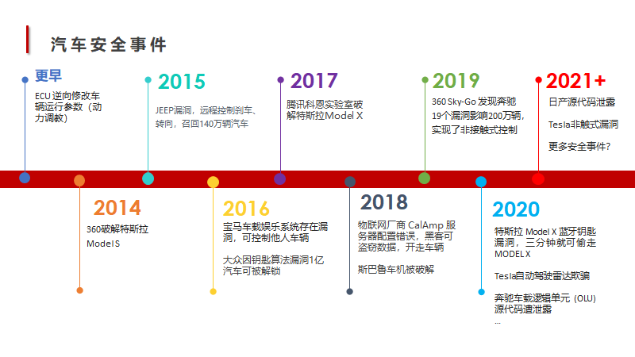
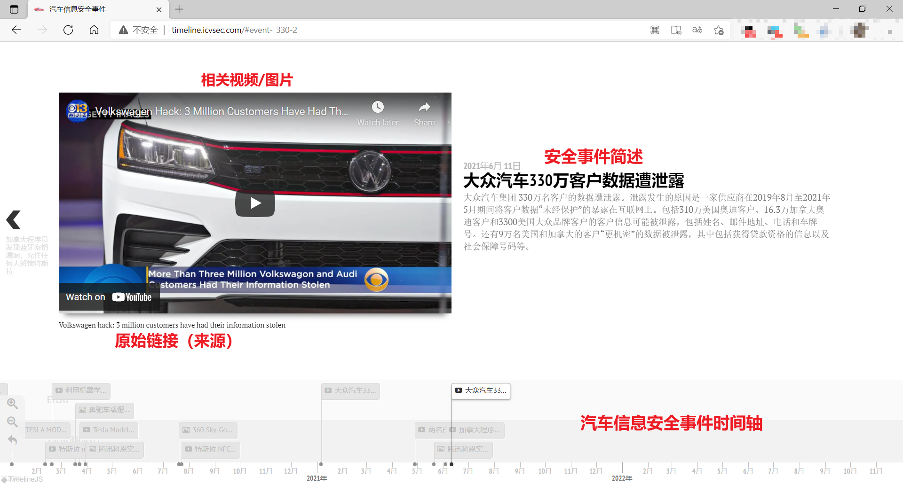

汽车信息安全事件时间轴正式上线
汽车信息安全事件时间轴正式上线
前言
前一段时间在准备奇绩创谈车企日演讲 PPT 中，遇到了一个汽车安全同行可能都遇到过的问题：在 PPT 中准备汽车安全事件时间轴（如下图）时，需要自己收集过去发生的信息安全事件，由于事件都比较零散，需要自己一个一个收集。准备这一页 PPT 就需要花费相当长的时间，费时费力。 本着不重复造轮子的原则，相同事情就不要重复做了，于是就准备动手搭建一个，帮助大家节约时间。我把自己的想法告诉了青骥的伙伴们，得到了大家的支持。利用几个周末的时间，把汽车信息安全事件时间轴网站搭建了出来。
在搭建期间有了新的想法，用途不在局限于写 PPT。我们将汽车信息安全事件时间轴打造成汽车信息安全事件导航，用于追踪汽车安全事件。

网站搭建
最开始的初衷是解决写 PPT 中的问题，起初的想法搭建一个时间轴，需要时过来截图就可以了。在准备过程中发现安全事件较多，写 PPT 中每个人的侧重点可能不同，一个时间轴满足不了大家的需求，后来想设置过滤条件自动生成时间轴。但这需要投入很大的精力来开发，但我们都并非开发出身，完成的时间和效果都无法保证。于是准备利用开源项目，来实现我们这一想法。很幸运在找到了 TimelineJS3 项目，我们基于这个项目搭建了汽车信息安全事件时间轴。
网站使用甘特图将单个安全事件串联起来形成一条时间链。单个安全事件中包含事件描述、事件来源、多媒体资源（图片/视频）。
网站展示
经过一段时间的内测，现已对外开放。网站地址：http://timeline.icvsec.com。

当前收录了从 2015 年至今的 26 个（持续完善中）安全事件，包括汽车、充电桩等终端的漏洞以及车企数据泄露等安全事件。
共建共享
我们并没有完整收录汽车历史上发生过的安全事件，不乏存在遗漏，还有待补充。此项目已经开源，期待大家一起共同维护完善。项目托管在https://github.com/delikely/Automotive-Security-Timeline，欢迎 PR。同时也建立了微信群方便大家沟通，帮助我们及时跟进安全事件，并更新网站上的数据。扫描下方二维码进入微信群。
数据格式如下。
1 | { |
致谢
感谢青骥的各位伙伴、火线安全车联网实验室、Tiger-Team、鬼斧实验室、墨鱼实验室等在内测期间给与的事件补充与支持。